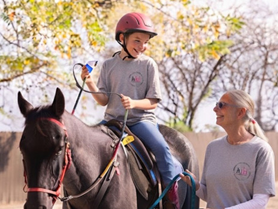
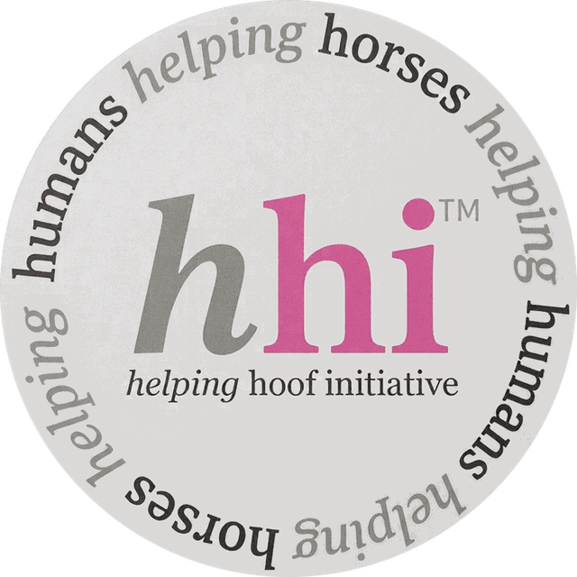
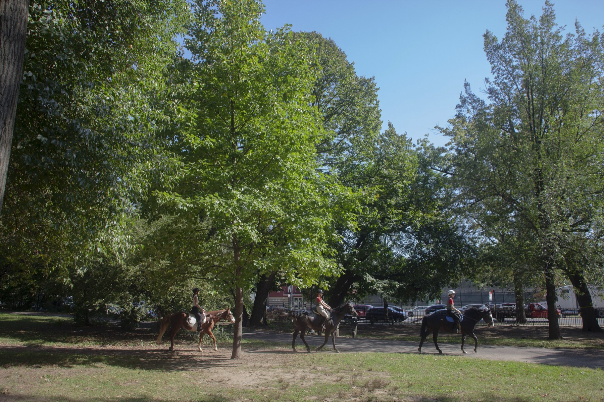
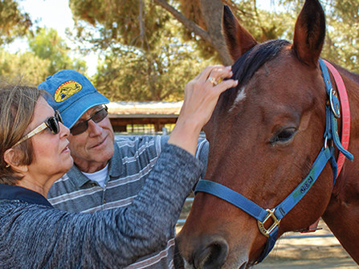
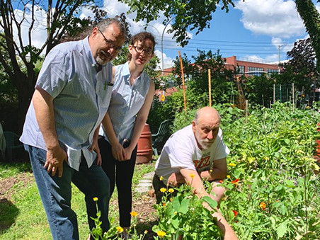
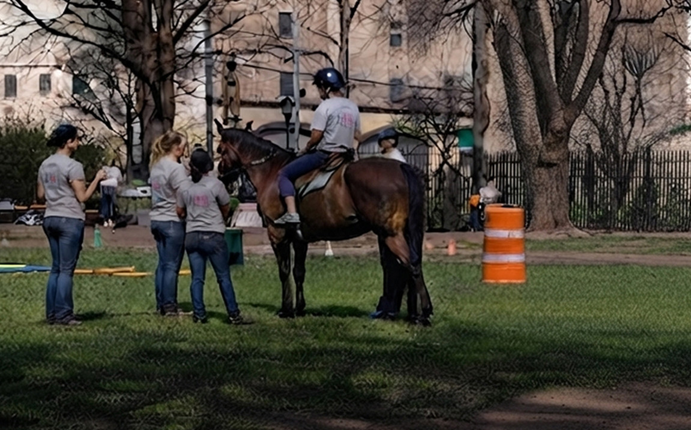

Youth & intergenerational care
Hands-on Equine Assisted Learning (EAL) for children, youth and seniors.
Learn more →We improve equine and human public infrastructure in urban environments, with a primary focus on Prospect Park, Brooklyn. Through meaningful programs and experiences, we help humans and horses thrive — together.



Hands-on Equine Assisted Learning (EAL) for children, youth and seniors.
Learn more →
The benefits of Equine Assisted Learning (EAL) for emotional, social, physical well-being.
Learn more →
Caring for our park, horses, & planet through sustainable practices and partnerships.
Learn more →
A safe, fenced space dedicated to horses, people, and community.
There is much we can learn from a friend who happens to be a horse.Aleksandra Layland